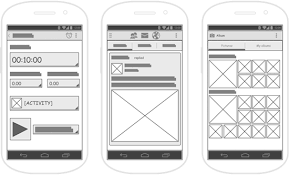

Reconocer los elementos de la interfaz de usuario de Mendix Studio Pro
Crear una pagina de inicio
Agregar columnas, filas y botones a una pagina
Crear paginas y vincularlas a botones
Analizar errores
Utilice Team Server para colaborar eficazmente con su equipo
Confirme sus cambios en Team Server y comparta su trabajo con su equipo
Creacion de su aplicacion
Planificacion
Recuerda que el objetivo es generar valor comercial rápidamente con historias más impactantes primero. Una vez que hayas identificado en qué historia empezar a trabajar, puedes profundizar en las tareas descritas para saber exactamente qué hacer.

Explorar Mendix Studio Pro
1. En la parte superior de Mendix Studio Pro se encuentra la barra de control. Estos son los menús y botones, de izquierda a derecha:
Archivo : abrir y cerrar documentos y proyectos
Editar : todas las opciones relacionadas con la edición de archivos, la búsqueda de elementos en su proyecto y la configuración de sus preferencias.
Ver : desde aquí, puede abrir todas las ventanas de herramientas disponibles
Aplicación : funciones relacionadas con el directorio del proyecto y los paquetes de implementación
Ejecutar : ejecuta y obtén una vista previa de tu aplicación
Control de versiones : todas las funciones relacionadas con el trabajo con Team Server (hablaremos más sobre esto en breve)
Idioma : administre la configuración del idioma y acceda a las operaciones del idioma
Ayuda : acceso rápido a entornos de ayuda
Anterior/Siguiente - Navega por tus recursos abiertos
Triángulo verde : ejecuta tu aplicación localmente
Plaza Roja : detén tu aplicación local
Publicar : implementa tu aplicación en la nube
Ver aplicación : ejecuta tu aplicación
Burbuja de chat : abre el panel de la aplicación en el Portal de Mendix
Carrito de compras : abre el Marketplace dentro de Studio Pro
Icono de IA : abre Maia Chat and Learn
Imagen de perfil : proporciona acceso al Portal de Mendix y al botón de cierre de sesión
2. El Explorador de Aplicaciones permite acceder a todos los recursos de la aplicación (páginas, microflujos y navegación, por ejemplo).
3. Es el Editor, aquí es donde crearás todos tus recursos, que se abrirán en pestañas como un navegador web. Permite escribir, arrastrar y soltar, hacer clic, doble clic, clic derecho y atajos de teclado estándar como copiar, pegar, deshacer y rehacer.
4. Se encuentran los paneles Propiedades y Caja de herramientas . En la Caja de herramientas encontrará los elementos que puede arrastrar al editor. El panel Propiedades mostrará y permitirá editar los detalles de cualquier elemento al que haga clic
5. En la parte inferior, encontrarás la pestaña "Cambios" , "Errores" y "Recomendador de mejores prácticas" . La pestaña "Cambios" mostrará los cambios realizados en la aplicación desde la última sincronización. La pestaña "Errores" mostrará en tiempo real si hay alguna configuración incorrecta que impida que la aplicación se ejecute
Columnas y Filas
Los widgets son cualquier elemento que se obtiene de la caja de herramientas y se coloca en una página de Mendix. El título de la página de inicio que acabas de editar es un widget, y las cuadrículas de diseño que eliminaste, con su contenido... todos son widgets. Los botones también son widgets.
La cuadrícula de diseño es un widget que estructura espacialmente tus páginas. Consiste en una o más filas, y cada fila contiene una o más columnas. Puedes configurar cuántas filas y columnas tiene cada una. Las columnas se muestran horizontalmente y su tamaño se puede personalizar. Hay tres opciones: Autoajuste , Autorelleno y Manual .
Las páginas de Mendix se reconfiguran para adaptarse mejor a diferentes tamaños de pantalla y tipos de dispositivos. Esto se conoce como comportamiento responsivo y es una de las razones principales por las que Mendix es tan rápido y fácil de desarrollar. Solo necesitas diseñar una página una vez y funcionará de inmediato y se verá bien para todos los usuarios potenciales.
Las cuadrículas de diseño son un tipo de widget contenedor . Se trata de una familia muy extensa de widgets. . Agrupar widgets mediante contenedores tiene algunas ventajas. Los widgets agrupados pueden ser:
Emocionado
Oculto
Estilizado
Alineado
Botones
Si exploras la sección de botones de la caja de herramientas, verás que hay muchos tipos diferentes para elegir. Sin embargo, son más similares entre sí de lo que parecen. De hecho, todos los botones son técnicamente el mismo tipo de widget (Botón de Acción). Un botón tiene una configuración llamada Al hacer clic : cada una de las variedades de botón simplemente tiene su Al hacer clic configurado para realizar una acción diferente, como abrir una página o eliminar algo.
Paginas
Nombre de la pagina
El título debe describir la información que mostrará la página y el tipo de página.
Diseño de navegacion
El diseño de navegación determina si se trata de una página a pantalla completa o de una ventana emergente más pequeña. Es mejor ser consistente al usar los diseños, especialmente en la navegación principal.
Plantilla
Esto precargará la página con diferentes tipos de widgets y estilos, según lo que elijas. Estas plantillas, creadas por nuestro equipo de UX, son una forma sencilla de crear rápidamente páginas atractivas e intuitivas.
Errores
Para resolver un error, primero lea el mensaje correspondiente. Para ver la ubicación exacta del error en la aplicación, haga doble clic en el mensaje y se abrirá el elemento correspondiente. En este caso, verá cuatro mensajes que indican que no hay entidades configuradas para la fuente de datos de sus cuatro vistas de lista.
Servidor de equipo
Mendix Team Server es un repositorio de versiones alojado en Mendix que contiene todas tus aplicaciones. Te permite colaborar con tu equipo y usar el control de versiones.
Hay dos requisitos previos para acceder a un proyecto de Team Server:
Debes ser miembro del equipo del proyecto de la aplicación.
Debe tener un rol con permiso para editar el modelo. (Por defecto, este es el rol de Scrum Master o Ingeniero de Negocios).
Una copia de trabajo es una copia local de la aplicación en la unidad de almacenamiento de tu ordenador. Esta copia local es en la que trabajas y donde realizas todos los cambios. Al empezar a trabajar en tu copia local, esta empieza a diferir de la original, que se almacena en el repositorio del Team Server.
El estado de tu aplicación es la relación entre todos los cambios en tu copia de trabajo y la última versión en Team Server. Al trabajar en Mendix Studio Pro, los cambios se realizan localmente y se muestran en el panel "Cambios"
Enviar cambios al repositorio se llama "commit". La mejor práctica es "commit" (comprometer) pequeños fragmentos de trabajo consistentes en el repositorio.
Al confirmar, se crea una nueva revisión en el repositorio. Puedes agregar un mensaje de confirmación y seleccionar las historias de usuario relacionadas. El mensaje de confirmación debe
describir los cambios realizados. Seleccionar las historias de usuario relacionadas es muy importante.Mendix recomienda mantener las confirmaciones pequeñas y relacionadas solo con una historia a la vez.
Cuando uno de tus compañeros de equipo crea una característica increíble y la envía al servidor de equipo, puedes actualizar tu copia de trabajo para obtener esa característica en tu versión local de la aplicación.
Revisa tu trabajo
Es posible crear instantáneas de aplicaciones que se pueden cargar en Studio Pro para crear una nueva aplicación idéntica. Estas se denominan Paquetes de Aplicaciones y tienen la extensión .mpk .Aquí te explicamos cómo usarlo para revisar tu trabajo:
Descargue el archivo mpk y guárdelo en algún lugar donde pueda encontrarlo.
Abra una nueva instancia de Studio Pro.
Haga clic en Archivo > Importar paquete de aplicación…
Busca el archivo mpk que acabas de descargar. Haz clic en "Abrir" .
Haga clic en Aceptar en la ventana que aparece.
Resumen
En este módulo, pasó de capturar los requisitos a crear su aplicación y utilizó Studio Pro para crear las primeras páginas de su aplicación desde cero.
Conocimientos
A page is responsive when:
It works and looks good on all devices
How many rows can a page have?
As many as you need
It is possible to place multiple widgets in a container.
True
You downloaded the latest version of the project from the Team Server and made some changes to the app. What do you need to do next so that your team members can view your changes?